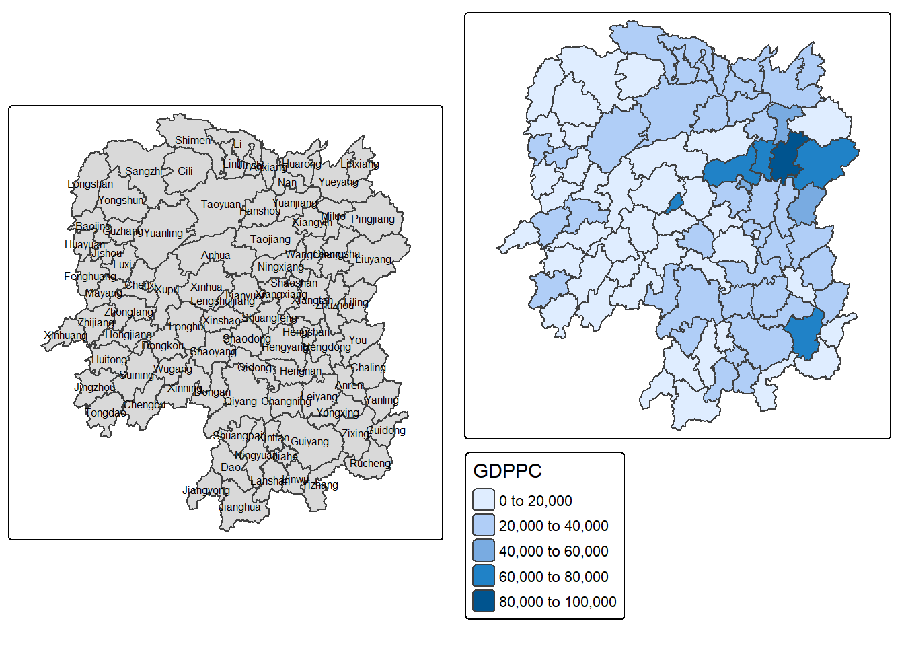
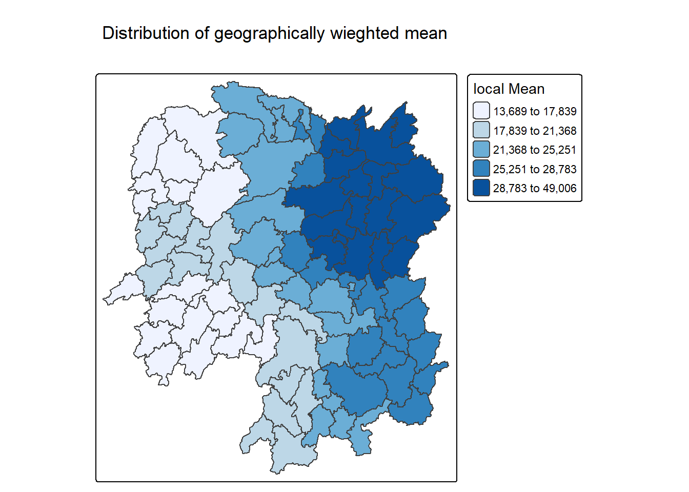
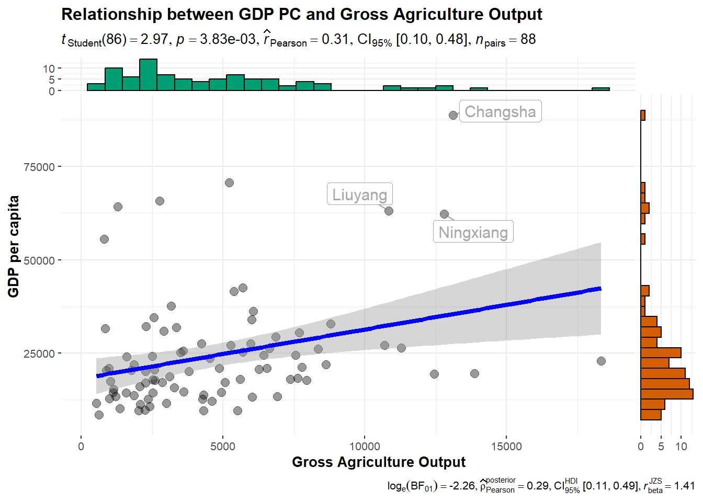

pacman::p_load(sf, ggstatsplot,tmap, tidyverse, knitr, GWmodel)In-class Ex04 -Geographically Weighted Summary Statistics - gwModel methods
Overview
we are using Geographically weighted summary statistics (GWSS), method that calculates summary statistics for local areas within a dataset, rather than for the entire dataset globally. It gives more weight to nearby data points using a chosen kernel (like bisquare or Gaussian) and a set bandwidth. This helps find local differences in patterns and relationships across the area, giving more detailed insights than standard global statistics
**Application of GWSS GWSS shows how relationships between variables change across locations. It’s used in areas like environment, health, and socio-economics to map differences, find patterns, and guide local actions. By using local models instead of one global model, it reveals detailed patterns for better decision
Installing packages
using pacman package we install all the libraries for the his In-class exercise
Importing and preparing the data
Importing Hunan shapefile
hunan_sf <- st_read(dsn = "K:/kalpitkulshrestha24/ISSS626/In-class Exercise/In-class Exercise 4/data/geospatial",
layer = "Hunan")Reading layer `Hunan' from data source
`K:\kalpitkulshrestha24\ISSS626\In-class Exercise\In-class Exercise 4\data\geospatial'
using driver `ESRI Shapefile'
Simple feature collection with 88 features and 7 fields
Geometry type: POLYGON
Dimension: XY
Bounding box: xmin: 108.7831 ymin: 24.6342 xmax: 114.2544 ymax: 30.12812
Geodetic CRS: WGS 84Importing Hunan_2012 files
hunan2012 <- st_read("K:/kalpitkulshrestha24/ISSS626/In-class Exercise/In-class Exercise 4/data/aspatial/Hunan_2012.csv")Reading layer `Hunan_2012' from data source
`K:\kalpitkulshrestha24\ISSS626\In-class Exercise\In-class Exercise 4\data\aspatial\Hunan_2012.csv'
using driver `CSV'join Hunan and Hunan_2012 data.frames.
hunan_sf <- left_join(hunan_sf,hunan2012) %>%
select(1:3, 7, 15, 16, 31, 32)Mapping GDPPC
hunan_sf$GDPPC <- as.numeric(gsub("[^0-9.]", "", as.character(hunan_sf$GDPPC)))
basemap <- tm_shape(hunan_sf) +
tm_polygons() +
tm_text("NAME_3", size=0.5)
gdppc <- qtm(hunan_sf, "GDPPC")
tmap_arrange(basemap, gdppc, asp=1, ncol=2)
converting to Spatial Polygon data frame
GWmodel presently is built around the older sp and not sf formats for handling spatial data in R
hunan_sp <- hunan_sf %>%
as_Spatial()Geographically Weighted Summary Statistics (GSWW) with adaptive bandwidth
Determine adaptive bandwidth - Cross-validation
bw_CV <- bw.gwr(GDPPC ~ 1,
data = hunan_sp,
approach = "CV",
adaptive = TRUE,
kernel = "bisquare",
longlat = T)Adaptive bandwidth: 62 CV score: 15515442343
Adaptive bandwidth: 46 CV score: 14937956887
Adaptive bandwidth: 36 CV score: 14408561608
Adaptive bandwidth: 29 CV score: 14198527496
Adaptive bandwidth: 26 CV score: 13898800611
Adaptive bandwidth: 22 CV score: 13662299974
Adaptive bandwidth: 22 CV score: 13662299974 bw_CV[1] 22Determine adaptive bandwidth - AIC
bw_AIC <- bw.gwr(GDPPC ~ 1,
data = hunan_sp,
approach = "AIC",
adaptive = TRUE,
kernel = "bisquare",
longlat = T)Adaptive bandwidth (number of nearest neighbours): 62 AICc value: 1923.156
Adaptive bandwidth (number of nearest neighbours): 46 AICc value: 1920.469
Adaptive bandwidth (number of nearest neighbours): 36 AICc value: 1917.324
Adaptive bandwidth (number of nearest neighbours): 29 AICc value: 1916.661
Adaptive bandwidth (number of nearest neighbours): 26 AICc value: 1914.897
Adaptive bandwidth (number of nearest neighbours): 22 AICc value: 1914.045
Adaptive bandwidth (number of nearest neighbours): 22 AICc value: 1914.045 bw_AIC[1] 22Computing Geographically weighted summary statistics
computing geographically weighted summary statistics by using gwss() of GWmodel package. The analysis is performed using adaptive distance weighted. The distance is derived using AIC method and the kernel method used id bisquare.
gwstat <- gwss(data = hunan_sp,
vars = "GDPPC",
bw = bw_AIC,
kernel = "bisquare",
quantile = TRUE,
adaptive = TRUE,
longlat = T)gwstat ***********************************************************************
* Package GWmodel *
***********************************************************************
***********************Calibration information*************************
Local summary statistics calculated for variables:
GDPPC
Number of summary points: 88
Kernel function: bisquare
Summary points: the same locations as observations are used.
Adaptive bandwidth: 22 (number of nearest neighbours)
Distance metric: Great Circle distance metric is used.
************************Local Summary Statistics:**********************
Summary information for Local means:
GDPPC_LM
Min. 1st Qu. Median 3rd Qu. Max.
13688.70 17995.43 23408.07 27865.12 49005.84
Summary information for local standard deviation :
GDPPC_LSD
Min. 1st Qu. Median 3rd Qu. Max.
4282.599 6297.788 8281.756 16315.028 22568.841
Summary information for local variance :
GDPPC_LVar
Min. 1st Qu. Median 3rd Qu. Max.
18340656 39662960 68633859 266187788 509352591
Summary information for Local skewness:
GDPPC_LSKe
Min. 1st Qu. Median 3rd Qu. Max.
-0.2150599 0.9900027 1.3714638 1.8387524 3.7525953
Summary information for localized coefficient of variation:
GDPPC_LCV
Min. 1st Qu. Median 3rd Qu. Max.
0.2000503 0.3107774 0.3829294 0.5129959 0.8018153
************************************************************************Note for myself: gwss support five kernel methods. That are:
- gaussian
- exponential
- bisquare
- tricube
- boxcar
After repating the code woth different kerenls and comparing result the result are this.
Across the five kernels, the results show clear differences in how local statistics are smoothed and weighted. Bisquare and Tricube kernels produce similar outcomes with moderate standard deviations and variances, showing smooth but still locally sensitive patterns, and skewness ranging from slightly negative to about 3.5. Boxcar kernel applies a hard cut-off and gives a slightly higher local mean GDPPC with larger variance and standard deviation, making local estimates more abrupt. Exponential kernel produces more gradual weighting with distance, leading to a narrower spread of local means and moderate variance, with mostly positive skewness. Finally, the Gaussian kernel yields the smoothest and most stable estimates with the highest median GDPPC, lowest variance and standard deviation, and a consistently positive skewness. Overall, as you move from Boxcar to Gaussian, the influence becomes smoother and more stable, while Bisquare and Tricube strike a balance between local sensitivity and smoothness.
Preparing the output data
gwstat_df <- as.data.frame(gwstat$SDF)cbind() is used to append the newly deried data.frame onto hunan_sf sd data.frame.
hunan_gstat <- cbind(hunan_sf, gwstat_df)Visualising gepgrapically weighted summary statistics
tm_shape(hunan_gstat) +
tm_polygons(fill = "GDPPC_LM",
fill.scale = tm_scale_intervals(
style = "quantile",
n = 5,
values = "brewer.blues"),
fill.legend = tm_legend(
title = "local Mean")) +
tm_borders(fill_alpha = 0.5) +
tm_layout(main.title = "Distribution of geographically wieghted mean",
main.title.position = "center",
main.title.size = 2.0,
frame = TRUE)
GWSS with Fixed Bandwidth
Determine fixed bandwidth - Cross validation
bw_CV <- bw.gwr(GDPPC ~ 1,
data = hunan_sp,
approach = "CV",
adaptive = FALSE,
kernel = "bisquare",
longlat = T)Fixed bandwidth: 357.4897 CV score: 16265191728
Fixed bandwidth: 220.985 CV score: 14954930931
Fixed bandwidth: 136.6204 CV score: 14134185837
Fixed bandwidth: 84.48025 CV score: 13693362460
Fixed bandwidth: 52.25585 CV score: Inf
Fixed bandwidth: 104.396 CV score: 13891052305
Fixed bandwidth: 72.17162 CV score: 13577893677
Fixed bandwidth: 64.56447 CV score: 14681160609
Fixed bandwidth: 76.8731 CV score: 13444716890
Fixed bandwidth: 79.77877 CV score: 13503296834
Fixed bandwidth: 75.07729 CV score: 13452450771
Fixed bandwidth: 77.98296 CV score: 13457916138
Fixed bandwidth: 76.18716 CV score: 13442911302
Fixed bandwidth: 75.76323 CV score: 13444600639
Fixed bandwidth: 76.44916 CV score: 13442994078
Fixed bandwidth: 76.02523 CV score: 13443285248
Fixed bandwidth: 76.28724 CV score: 13442844774
Fixed bandwidth: 76.34909 CV score: 13442864995
Fixed bandwidth: 76.24901 CV score: 13442855596
Fixed bandwidth: 76.31086 CV score: 13442847019
Fixed bandwidth: 76.27264 CV score: 13442846793
Fixed bandwidth: 76.29626 CV score: 13442844829
Fixed bandwidth: 76.28166 CV score: 13442845238
Fixed bandwidth: 76.29068 CV score: 13442844678
Fixed bandwidth: 76.29281 CV score: 13442844691
Fixed bandwidth: 76.28937 CV score: 13442844698
Fixed bandwidth: 76.2915 CV score: 13442844676
Fixed bandwidth: 76.292 CV score: 13442844679
Fixed bandwidth: 76.29119 CV score: 13442844676
Fixed bandwidth: 76.29099 CV score: 13442844676
Fixed bandwidth: 76.29131 CV score: 13442844676
Fixed bandwidth: 76.29138 CV score: 13442844676
Fixed bandwidth: 76.29126 CV score: 13442844676
Fixed bandwidth: 76.29123 CV score: 13442844676 bw_CV[1] 76.29126Determine fixed bandwidth - AIC
bw_AIC <- bw.gwr(GDPPC ~ 1,
data = hunan_sp,
approach ="AIC",
adaptive = FALSE,
kernel = "bisquare",
longlat = T)Fixed bandwidth: 357.4897 AICc value: 1927.631
Fixed bandwidth: 220.985 AICc value: 1921.547
Fixed bandwidth: 136.6204 AICc value: 1919.993
Fixed bandwidth: 84.48025 AICc value: 1940.603
Fixed bandwidth: 168.8448 AICc value: 1919.457
Fixed bandwidth: 188.7606 AICc value: 1920.007
Fixed bandwidth: 156.5362 AICc value: 1919.41
Fixed bandwidth: 148.929 AICc value: 1919.527
Fixed bandwidth: 161.2377 AICc value: 1919.392
Fixed bandwidth: 164.1433 AICc value: 1919.403
Fixed bandwidth: 159.4419 AICc value: 1919.393
Fixed bandwidth: 162.3475 AICc value: 1919.394
Fixed bandwidth: 160.5517 AICc value: 1919.391 bw_AIC[1] 160.5517Adpative badnwif=dth computing GWSS
gwstat <- gwss(data = hunan_sp,
vars = "GDPPC",
bw = bw_AIC,
kernel = "bisquare",
adaptive = FALSE,
quantile = FALSE,
longlat = T)Preparing the output data
gwstat_df <- as.data.frame(gwstat$SDF)hunan_gstat <- cbind(hunan_sf, gwstat_df)Visualising geographically weighted summary statistics
tm_shape(hunan_gstat) +
tm_polygons(fill = "GDPPC_LM",
fill.scale = tm_scale_intervals(
style = "quantile",
n = 5,
values = "brewer.blues"),
fill.legend = tm_legend(
title = "local Mean")) +
tm_borders(fill_alpha = 0.5) +
tm_layout(main.title = "Distribution of geographically wieghted mean",
main.title.position = "center",
main.title.size = 2.0,
frame = TRUE)
Geographically Weighted Correlation
hunan2012 <- hunan2012 %>%
mutate(
Agri = as.numeric(gsub("[^0-9.]", "", as.character(Agri))),
GDPPC = as.numeric(gsub("[^0-9.]", "", as.character(GDPPC)))
)below code of chunk I am getting some error because one or both agri and GDPPC isn;t numeric. ggscatterstats draws marginal histogram using stat_xsidein(), which requires contiuous (numeric) data.
ggscatterstats(
data = hunan2012,
x = Agri,
y = GDPPC,
xlab = "Gross Agriculture Output", ## label for the x-axis
ylab = "GDP per capita",
label.var = County,
label.expression = Agri > 10000 & GDPPC > 50000,
point.label.args = list(alpha = 0.7, size = 4, color = "grey50"),
xfill = "#CC79A7",
yfill = "#009E73",
title = "Relationship between GDP PC and Gross Agriculture Output")